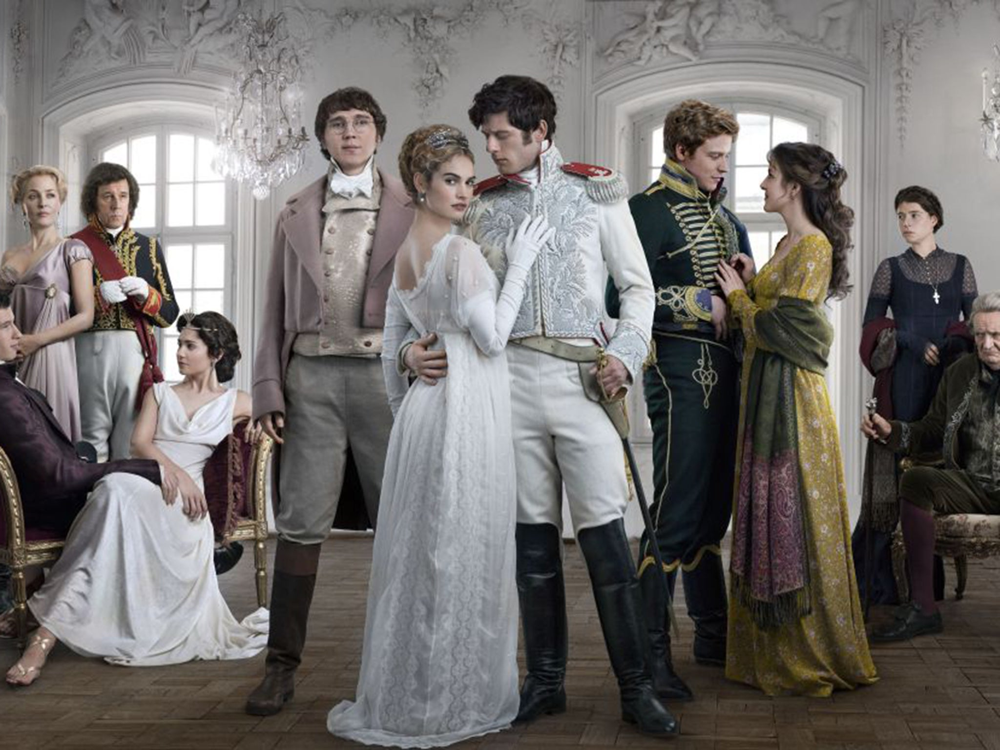

War and Peace
Dünya edebiyatının önemli başarılarından biri olan ve saygı değer eser olarak kabul edilen Savaş ve Barış, Rus yazar Lev Tolstoy tarafından yazılmıştır. Konuya gelecek olursak Savaş ve Barış, Napolyon’un Rusya’yı işgal etmesini ve o sırada yaşanan olayları beş asil ailenin üzerinden anlatılmıştır. Savaş teması ile Rusya-Fransa arasındaki kan, savaş ve ucu bucağı olmayan vahşet anlatılırken, Barış teması ile kahramanlar arasında yaşanan romantik aşkları ifade edilmektedir. Dönem dizisi sevenler kaçırmamalıdır. 6 bölüm süren dizi bölüm başı 60 dakikadır. Başrol oyuncuları ise; Paul Dano,James Norton ve Lily James.
